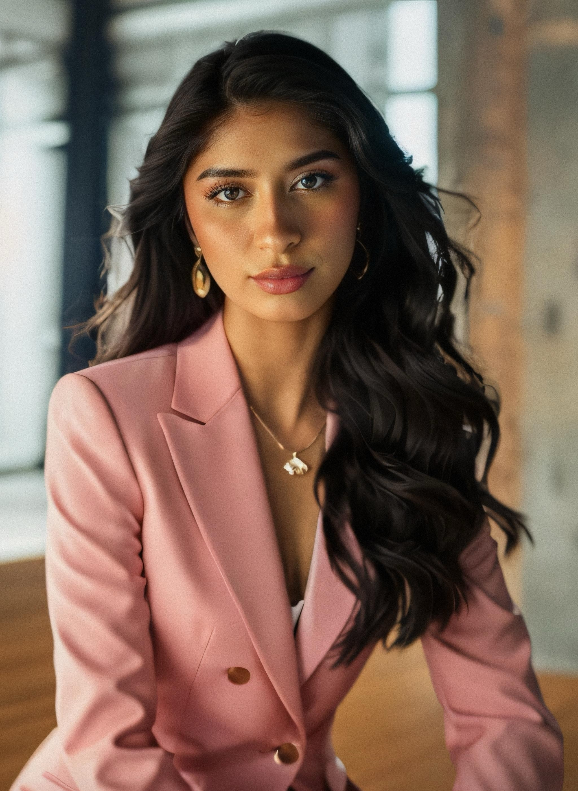

My Resume
Hi, I´m Natalia Villegas
About Me

I´m a student of Tourism passionate about research, technology and innovation.My
specialization is in event management and customer service. I'm looking for
opportunities to apply my abilities in dynamic and multicultural environments.
My hobbies
Academic experience
Bachelor's Degree in Tourism Management, Autonomous University of Nuevo León
- Date: June 2020 - December 2024
- During my Bachelor's Degree in Tourism Management at the Autonomous University
of Nuevo León, I studied a variety of subjects including economics, culture,
and politics. Midway through my studies, I focused on specialized topics in the
tourism industry, particularly event organization. I maintained a strong academic
performance with a GPA of 93.52.
Professional Experience
Freelance in Creation and Editing of Audiovisual Content
- Since: 2023
- Multimedia content developer for various platforms, proficient in video and
photography editing tools.
Teacher at Daycareland
- Date: September 2018 - November 2018
- Responsible for preschool education, implementing educational and
recreational activities
Abilities
Technical Skills
- Event Management
- Customer Service
- Multimedia Content Creation
Soft Skills
- Creativity
- Empathy
- Proactivity
- Communication and Organizational Skills
Projects
I have worked on diverse projects that showcase my skills and creativity. My
Capstone Project features an online resume that highlights my academic and
professional achievements. I also developed a Blog Web Application using modern
web technologies, focusing on functionality and user experience. Additionally,
as a Freelance Multimedia Content Creator, I designed various assets for a
streamer, including illustrations, banners, Instagram icons, and stories to
promote their content.
More info